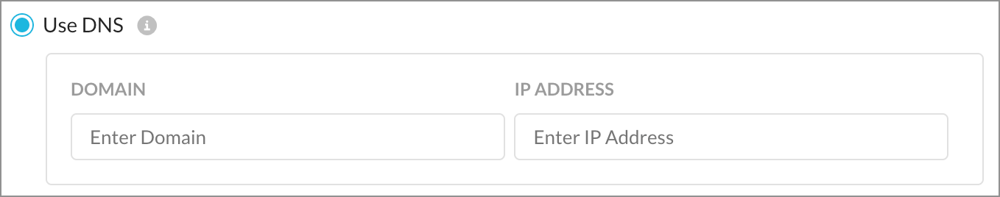
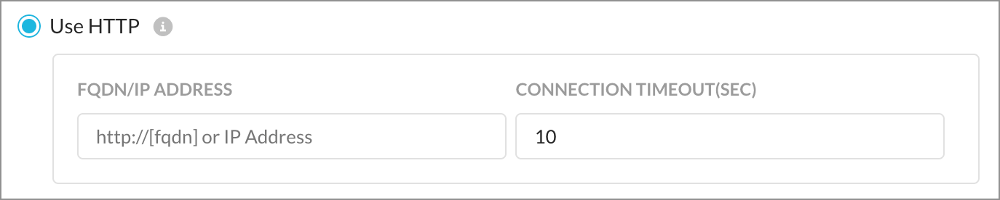
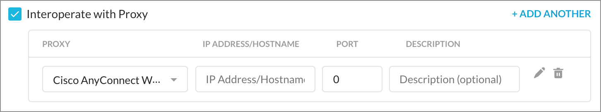
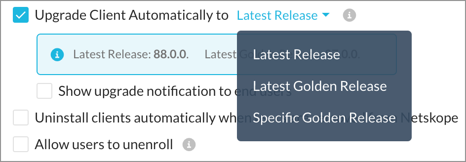

Netskope Client Admin Configuration
You can configure system-wide settings using the Client Configuration dialog box. To access client configuration pages:
Login to your tenant with admin credentials
Go to Settings > Security Cloud Platform > Devices
Click Client Configurations in the top right corner to open the Client Configuration page.
Click New Client Configuration to add a new global configuration.
Additional configurations can be created to obtain granular control over the behavior of the Netskope Client at a group or OU level by creating a new configuration. If these configurations are applied to groups, they must be prioritized to determine which configuration is applied to the Client when there is an overlap in group membership.
Note
Multiple configurations can be created and applied to different OUs or Groups. But when applying a configuration only one OU or User Group can be selected.
Applies To
Select OU (Organizational Unit) or the User Group to which this configuration will be applied. You can apply the configuration either to the OU or the user group but not to both at the same time. If a user is part of multiple groups, the configuration is applied to first group in the configuration list.
For example: John Doe is part of HR-Group and Sales-Group. The organization creates Config-A and Config-B and applies to HR-Group and Sales-Group respectively. If in the list of configurations, HR-Group is listed above Sales-Group, then only the Config-A settings are applied to John Doe. The settings in Config-B is applied to all users in Sales-Group except John Doe. The Default Config is then applied to all users who are not part of HR-Group and Sales-Group. To apply the configuration to John Doe in Sales-Group, use the reorder handles (first column dot-icons) to drag and reposition the configuration.
Traffic Steering
Enable DTLS (Data Transport Layer Security) - Enable DTLS (Data Transport Layer Security). Optionally, enter an MTU value.
Note
It is recommended that you enable this option, if you have users connected to a loosy network.
On-Premise Detection - For On-Premises Detection, enter either your DNS FQDN and IP address or HTTP FQDN and connection timeout period that can be resolved with a known IP address. By enabling this option, you can detect the location of an endpoint. If the endpoint is on-premises or off-premises the Client tunnels the traffic based on the traffic mode configured for dynamic steering.
Use DNS
Use HTTP
If the FQDN entered resolves to the provided IP Address, the Netskope client is considered to be on-premises. Please make sure this is a valid DNS record that is resolvable only when on your network
If the Client will look for the HTTP response code 200, and if successful, the device is deemed to be on-premises. Also enter a connection timeout value. The default is 10 seconds, and the max is 60 seconds.
Note
Netskope Client release 72 or higher is needed for this feature to work.
On-Premises: If the endpoint is on-premise, the client will tunnel the following types of traffic and this traffic is bypassed by the Netskope Cloud
Cert pinned apps
Exception domains
Exception categories
Off-Premises: If the endpoint is off-premises, the client will bypass traffic based on the exception configurations.
Advanced Options - Toggle the Advanced link to see the following options:
Interoperate with Proxy - Interoperate with Proxy (IP address/hostname and port are default selections for the Cisco AnyConnect Web Security proxy). You can change the hostname and/or port. Select Static Web Proxy option from the Proxy dropdown list to add all details of all proxy endpoints used in your network.
Enable device classification and client-based end user notifications when the client is not tunneling traffic - This disables the Client when GRE, IPSec, Secure Forwarder and Data Plane On-Premises steering methods are detected.
Note
Even when the Client disables itself, the user justification rules will continue to be active.
Perform SNI (Server Name Indication) check - In scenarios where multiple domains use single IP address, it is recommended to use SNI in addition to DNS to make a steering decision.
Client Installation & Troubleshooting
Upgrade Client automatically to a specific release version. You can choose from the following upgrade options:
Note
If a lower version is selected, then the endpoint with higher version of Netskope Client installed will need manual uninstall and reinstall of the lower version of Netskope Client.
Latest Release - All clients will be upgraded the latest released version.
Latest Golden Release - All clients will be upgraded to the latest golden release. To know more about golden releases, check out this Client Downloads page.
Specific Golden Release - You can set all clients to be upgraded to a specific golden release. After selecting this option, you can select the golden release from the list of available versions. In addition, you can select Opt-in Upgrade to ensure the clients are upgraded to the latest minor or hot fix version of the selected golden release. To know more about golden releases, check out this Client Downloads page.
Show upgrade notification to end users. Select this option to send notification to end-users for an upcoming Client upgrade. This option is visible only if an upgrade option is selected
Uninstall clients automatically when users are removed from Netskope.
Allow users to unenroll. - If the Netskope client is provisioned via IdP, selecting this option allows users to unenroll from Netskope. When unenrolled the user is logged out from client and the Client is disabled. The user will be required to enter their IdP credentials to enroll again to enable client.
Advanced Options
Enable advanced debug option - Select this option to select the log level. Default is Info. The log files are stored by default in the following location:
Windows Devices: %PUBLIC%/Netskope/nedebug.log
macOS Devices: /Library/Logs/Netskope
Tamperproof
Allow disabling of Clients - Prevents end-users from disabling clients in the devices.
Hide Client Icon on System Tray - Hides the Client icon from end users devices system try. This will also prevent Client notifications from being displayed to the user.
Password protection for client uninstallation and service stop - Enable this option to prevent unauthorized uninstallation of client from end user devices. End user will be required to enter password for uninstalling the Client. Password protected uninstallation is supported in both Windows and macOS devices. Service stop option is available only Windows devices.
Fail Close - Blocks all traffic when a tunnel to Netskope is not established or a user device is not provisioned in the Netskope Cloud. Domain-based, IP-based, and cert-pinned exceptions will be applied, but category-based exceptions will be blocked. When a user is detected as on-premises, the exceptions will be blocked.
Note
If a Netskope tunnel fails to come up we recommend that you block the steered traffic from that device.
When Fail Close is enabled, the Password Protection for Client Uninstallation and Service Stop become enabled and Allow Disabling of Clients options becomes disabled. With Fail Close, you can Exclude Private Apps Traffic, so Private Access is not affected, and also Show Notifications.
Important
Fail close does not work the Netskope Client r78 with macOS 11 (Big Sur) due to the Network Extensions change in macOS. There is no impact on Windows with the r78 Client. Fail Close does work on Catalina, or below, using the r77 Client (only).
Client Configuration Encryption
Client configuration files generated in the admin config and downloaded by the client can be encrypted via the encryptClientConfig feature flag. This flag is disabled by default. To enable encryption reach out to Netskope Support.
Note
The encryption is performed on all files except the nsbranding file. The nsbranding file is encrypted via the encryptbranding feature flag. This can be enabled via a support ticket. Also, files generated by the user device are not encrypted. This option is not available in the Netskope Tenant Admin console and can be enabled only via a support ticket.
Log files sent for debugging are decrypted before creating a zip bundle of all the log files.